Every exam from the suggested-videos list: the general exam first (approach, gait, neuro screen), then each region's look, feel and move, its special tests grouped under the problem you suspect, and its pearls. Built from the course objectives; videos for each test are at mskmedicine.com. For the dermatomes and myotomes drawn on a body, see the body map.
Look: everything shown. Pick a region below to jump to it.
Every joint: Look → Feel → Move → Special tests → Neurovascular
Compare left with right · examine the joint above and below · watch gait for the back and legs. A test counts only when it reproduces the patient's own symptom or differs from the other side.
General exam
Week 1 · every joint
Approach to every joint
Say it first (TOSCE): "I would normally inspect the other side and examine the joint above and below, but in the interest of time I will focus on the [knee] complaint."
Look (inspection): drape so both sides can be seen, look from all sides
general impression: body habitus, distress, signs of systemic disease
Feel (palpation): temperature side to side (warmth = inflammation), swelling, then name each bony landmark, ligament, tendon and bursa as you press it, watching the patient's face
Move (range of motion, ROM)
active first (the patient moves it): if limited, is it weakness, pain or something else?
then passive (you move it): feel for crepitus and the end feel
active limited but passive full → tendon or nerve problem · both limited → the joint itself (arthritis, capsule)
Special tests: chosen for the joint and the suspected problem (sections below)
Neurovascular screen: sensation, strength, reflexes · pulses and skin
Adapting the exam: for a patient with a physical disability, modify the position or the instructions but still get the information that makes the diagnosis
Tap to reveal
Gait
Watch barefoot, from the front, back and side, at the patient's own speed. Add a functional screen: walk on toes (S1), walk on heels (L4-L5), tandem walk (balance), squat (proximal weakness).
Gait
What you see
Why
Antalgic
Shorter stance time on the painful side
Pain in the leg: knee arthritis, ankle sprain
Trendelenburg
Uncompensated: pelvis drops on the opposite side during stance · Compensated: trunk lurches over the weak side, pelvis stays level
Weak gluteus medius (hip abductor): hip pain, gluteal tendon tear, L5 radiculopathy · both sides weak → waddling gait
Foot drop
Foot slaps down after heel strike, or toes touch first · compensates with high hip flexion, circumduction or hip hiking
Weak ankle dorsiflexors: L4/L5 radiculopathy, sciatic or peroneal nerve injury
Shoulder abduction (supraspinatus first 30°, then deltoid) · elbow flexion
Lateral shoulder and arm
Biceps
C6
Wrist extension · elbow flexion
Lateral forearm, thumb and index finger
Brachioradialis
C7
Elbow extension, finger extension
Middle finger
Triceps
C8
Finger flexion
Ring and little finger · medial forearm
Finger flexors
T1
Finger abduction and adduction
Medial arm
—
L2-L3
Hip flexion · knee extension, hip adduction
Anterior and medial thigh
Knee (L2-L4)
L4
Ankle dorsiflexion (heel walk)
Medial leg
Knee
L5
Great toe extension, foot inversion
Lateral leg, top of the foot
—
S1
Plantar flexion (tip-toe walk)
Lateral and sole of the foot
Ankle
Muscle strength, the Medical Research Council (MRC) scale: 0 no contraction · 1 a flicker · 2 moves with gravity eliminated · 3 moves against gravity · 4 against some resistance · 5 normal.
⚠ In the lumbar spine, add saddle anesthesia and rectal tone where appropriate, and the Babinski test (an upgoing toe means an upper motor neuron lesion).
Cervical radiculopathy usually presents as arm pain, not neck pain: screen the cervical roots in anyone with arm pain.
Say first: "I would normally inspect the other side and examine the joint above and below (the shoulder and thoracic spine), but in the interest of time I will focus on the neck complaint."
Look
swelling: usually not visible unless there was trauma
redness over the front of the neck
wasting: sternocleidomastoid, trapezius, deltoids; scan the arms for wasting
deformity: normal cervical lordosis? forward head posture, head tilt
Extend the neck and turn the head toward the painful side
Press gently straight down on top of the head
Positive
Shooting pain or tingling down the arm (neck pain alone does not count)
Tap to reveal
Cervical distraction
Nerve root compression
Steps
Patient lies on their back (or sits)
Cup the back of the head and the chin
Gently lift the head to pull the neck long
Positive
Arm symptoms ease
Tap to reveal
Lumbar spine
Week 1 · 11 special tests
General exam
Look · Feel · Move
Say first: "I would normally inspect the other side and examine the joint above and below (the hip and thoracic spine), but in the interest of time I will focus on the low back complaint."
Look
redness over the paraspinal muscles
wasting: paraspinals; scan the legs for wasting
deformity: lordosis increased or flattened, scoliosis, iliac crests at equal heights, leg alignment standing
L5/S1 nerve root tension (sciatic nerve), usually a disc herniation
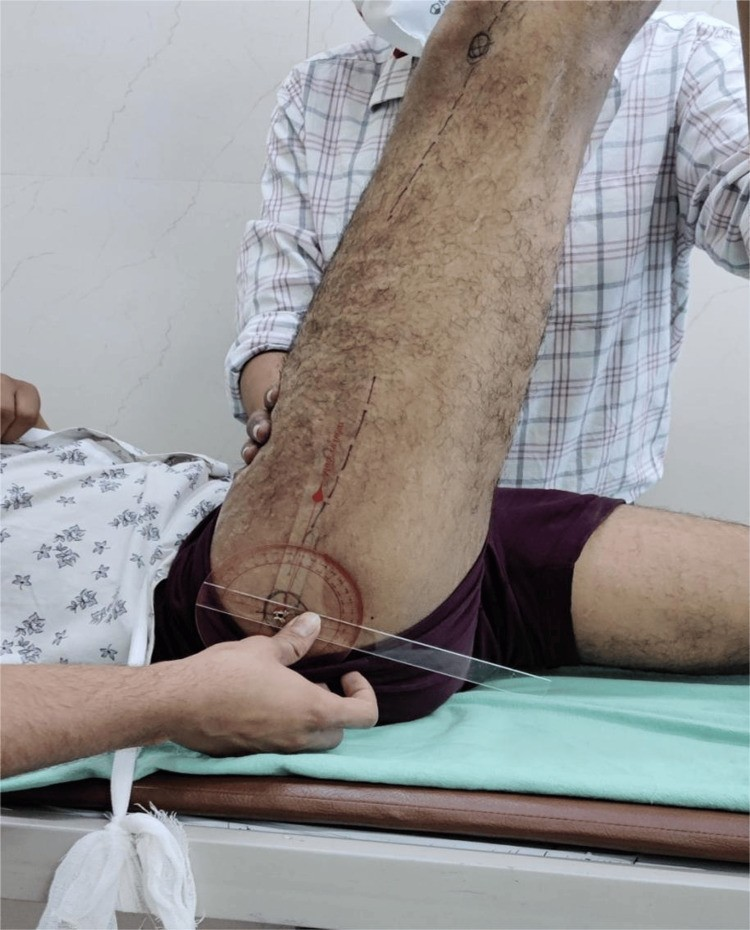
Steps
Patient lies on their back
Hold the heel and lift the leg with the knee straight
Note the angle where symptoms start
Positive
Pain shooting below the knee between 30° and 70° · back pain only = negative
Tap to reveal
Bragard's sign
Confirms a positive straight leg raise
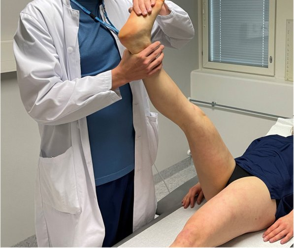
Steps
Raise the leg until the pain starts
Lower it just until the pain goes
Dorsiflex the ankle (pull the toes up)
Positive
Leg pain returns
Tap to reveal
Bowstring sign
Confirms a positive straight leg raise
Steps
Raise the leg until the pain starts
Bend the knee slightly until the pain eases
Press on the nerve behind the knee (popliteal fossa)
Positive
Leg pain returns
Tap to reveal
Crossed straight leg raise
Disc herniation
Steps
Patient lies on their back
Lift the unaffected (pain-free) leg straight
Positive
Pain in the affected leg (very specific for a disc herniation)
Tap to reveal
Upper lumbar root (L2-L4)
Femoral stretch test
Upper lumbar roots (L2-L4)
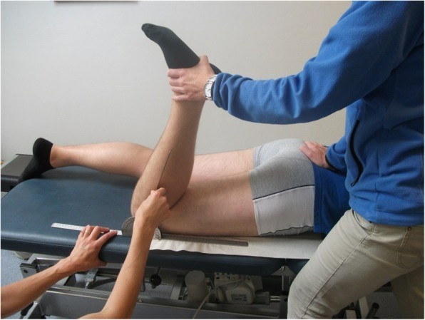
Steps
Patient lies face down
Bend the knee, bringing the heel toward the buttock
Optionally lift the thigh to extend the hip
Positive
Pain in the front of the thigh
Tap to reveal
Inflammatory back disease
Modified Schober's test
Inflammatory back disease (e.g. ankylosing spondylitis) restricting lumbar flexion
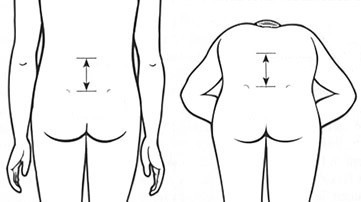
Steps
Patient stands; mark the spine between the dimples of Venus (lower back dimples)
Mark 10 cm above it
Patient bends forward, knees straight, and you remeasure
Positive
Distance increases by less than 5 cm
Tap to reveal
Scoliosis
Adam's forward bend test
Scoliosis
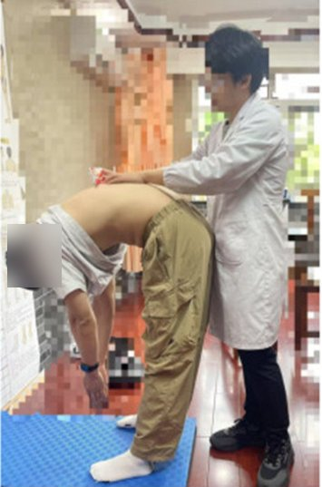
Steps
Stand behind the patient
Patient bends forward, arms hanging
Positive
One side of the ribs or back sits higher
Tap to reveal
SI joint (or hip)
FABER test (Flexion, ABduction, External Rotation)
SI joint or hip
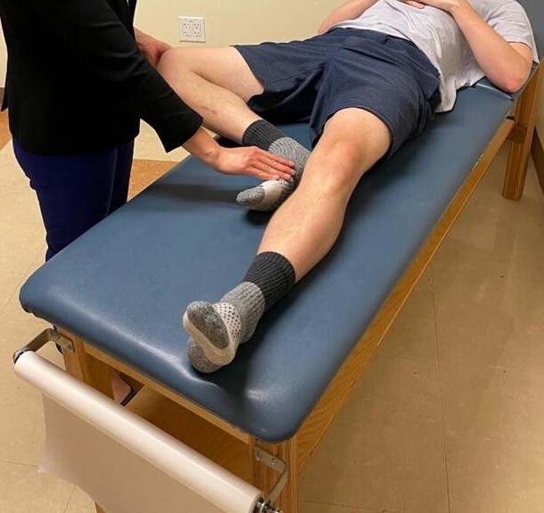
Steps
Patient lies on their back
Ankle on the opposite knee (figure-4)
Hold the opposite pelvis (ASIS) and press the bent knee down
Positive
Back-of-pelvis pain = SI joint · groin pain = hip
Tap to reveal
Thigh thrust
SI joint
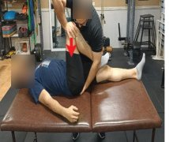
Steps
Patient lies on their back; hip bent 90°
One hand under the sacrum
Push down along the thigh
Positive
Buttock (SI joint) pain
Tap to reveal
Flexion contracture
Thomas test
Hip flexion contracture
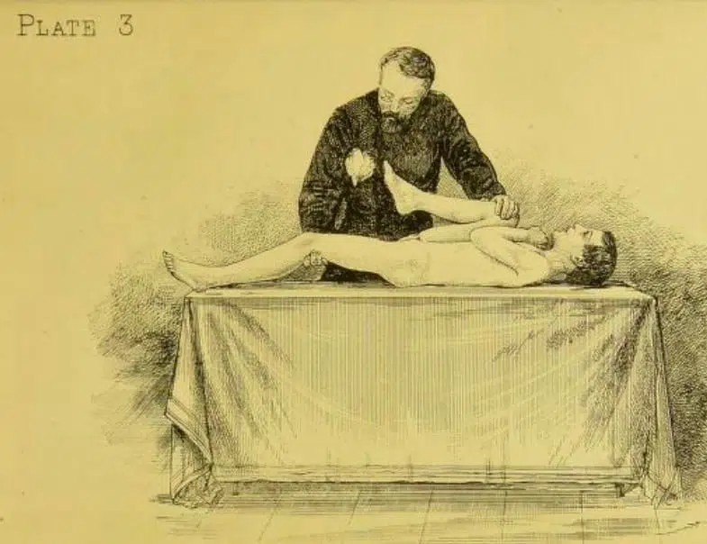
Steps
Patient lies on their back
Patient hugs one knee to the chest (flattens the low back)
Watch the other thigh
Positive
Other thigh lifts off the table
Tap to reveal
Leg length
True and apparent leg length
Leg length difference
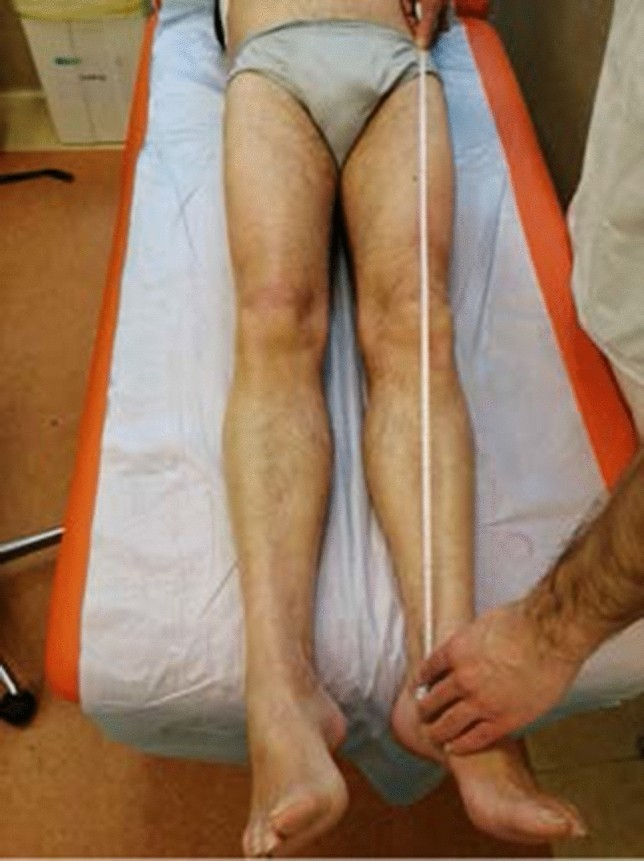
Steps
Patient lies straight
True: tape from the ASIS to the medial malleolus
Apparent: tape from the belly button to the medial malleolus
Positive
True difference = bone length · apparent only = pelvic tilt or contracture
Tap to reveal
Pearls and X-rays
Remember
The modified Schober test shows restricted lumbar flexion only: it says nothing about SI joint inflammation. With inflammatory back pain, add chest expansion, SI joint tests, enthesitis and a skin check.
Tap to reveal
Shoulder
Week 2 · 15 special tests
General exam
Look · Feel · Move
Say first: "I would normally inspect the other side and examine the joint above and below (the neck and elbow), but in the interest of time I will focus on the shoulder complaint."
Look
swelling: acromioclavicular (AC), sternoclavicular (SC) and glenohumeral (GH) joints (a large GH effusion shows at the front)
redness over the front of the GH joint and over the AC and SC joints
wasting: squaring of the shoulder (deltoid wasting), wasting over the scapula (supraspinatus, infraspinatus)
scars: front of the GH joint, arthroscopy portals, AC joint
Feel
temperature: the joint warmer than the tissue around it? · swelling of the GH, AC and SC joints
bony: SC joint, clavicle, AC joint, coracoid, acromion, GH joint, humeral head and greater tuberosity, scapular spine, inferior angle of the scapula
soft tissue: deltoid and rotator cuff bulk, trapezius, biceps and triceps bulk, biceps tendon (tenderness or a gap), axillary and supraclavicular lymph nodes
Move: flexion 0-180° · extension 0-50° · abduction 0-180° · adduction, external and internal rotation (compare sides) · screen functional ROM · feel for crepitus
Also: examine the cervical spine and elbow
Neurovascular: pulses, then motor, sensation and reflexes in the arm (root table under Neuro screen)
Patient lifts the arm out to the side and overhead, thumb up
Then lowers it slowly
Positive
Pain between 60° and 120°
Tap to reveal
Neer's test
Impingement
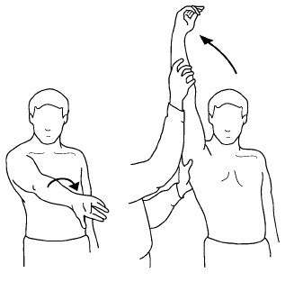
Steps
Stand behind; hold the scapula down
Turn the arm in (thumb down)
Lift the straight arm forward as high as it goes
Positive
Pain at the front or side of the shoulder
Tap to reveal
Hawkins test
Impingement
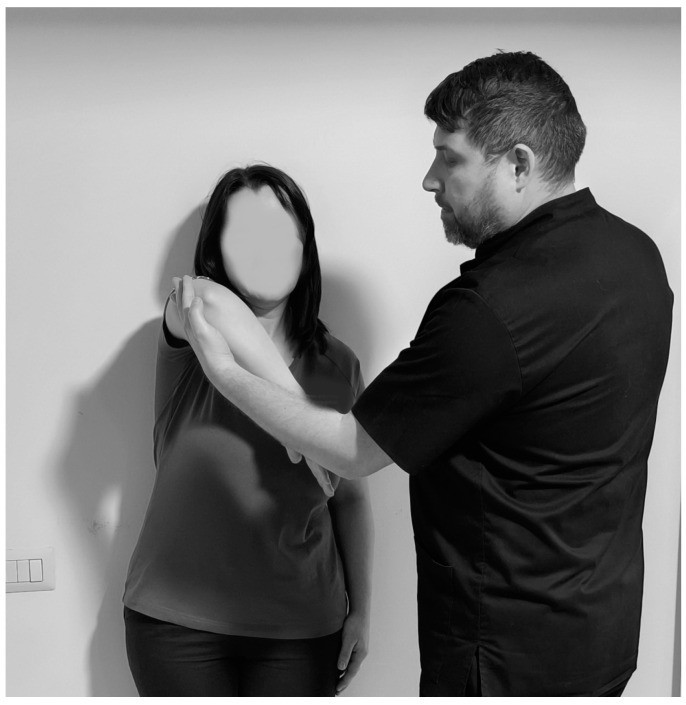
Steps
Raise the arm forward to 90°, elbow bent 90°
Support the elbow
Rotate the forearm down (internal rotation)
Positive
Pain in the shoulder
Tap to reveal
Rotator cuff tendon
Empty can test
Supraspinatus
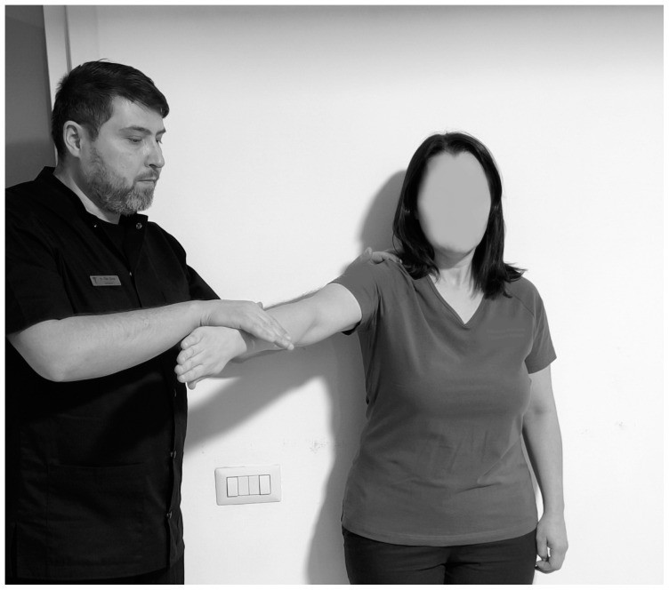
Steps
Arms out to 90°, angled 30° forward
Thumbs pointing down ("emptying a can")
Push down while the patient resists
Positive
Pain or weakness
Tap to reveal
Resisted external rotation
Infraspinatus, teres minor
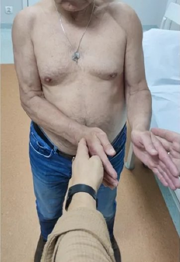
Steps
Elbows at the sides, bent 90°
Patient pushes the hands outward against yours
Positive
Pain or weakness
Tap to reveal
Lift-off test
Subscapularis
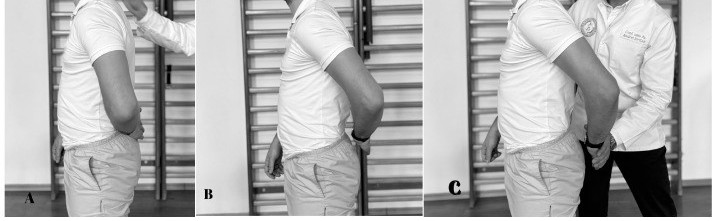
Steps
Patient puts the back of the hand on the lower back
Asks to lift the hand off the back (against resistance)
Positive
Cannot lift it off, or pain
Tap to reveal
Belly press test
Subscapularis (when the arm can't reach behind the back)
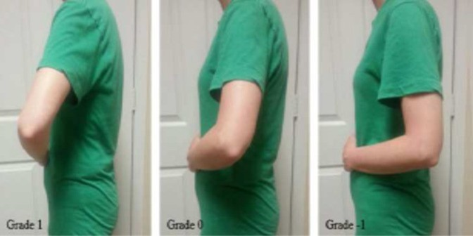
Steps
Hand flat on the belly, elbow bent
Press into the belly, keeping the elbow forward
Positive
Elbow drops back or wrist bends to cheat · pain or weakness
Tap to reveal
Bear hug test
Subscapularis (extra: not in the course objectives)
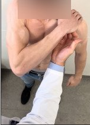
Steps
Patient puts the hand of the tested arm flat on the opposite shoulder, fingers straight, elbow held forward
Try to lift the hand off the shoulder (pull it outward, at right angles to the forearm) while the patient resists
Positive
Cannot keep the hand on the shoulder, or clearly weaker than the other side (subscapularis tear)
Tap to reveal
Drop arm test
Full-thickness supraspinatus tear (extra: not in the course objectives)
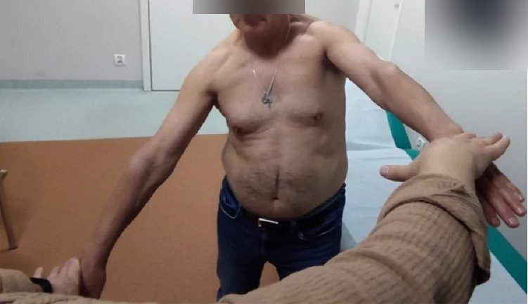
Steps
Lift the patient's straight arm out to the side (to about 90° or higher)
Ask them to lower it slowly to the side
Positive
Arm drops suddenly or cannot be lowered smoothly
Tap to reveal
External rotation lag sign
Infraspinatus (± supraspinatus) tear (extra: not in the course objectives)
Steps
Elbow bent 90° at the side
Turn the forearm outward almost as far as it goes
Let go of the wrist and ask the patient to hold it there
Positive
Forearm springs back inward (a lag)
Tap to reveal
Biceps tendon
Speed's test
Biceps tendinopathy
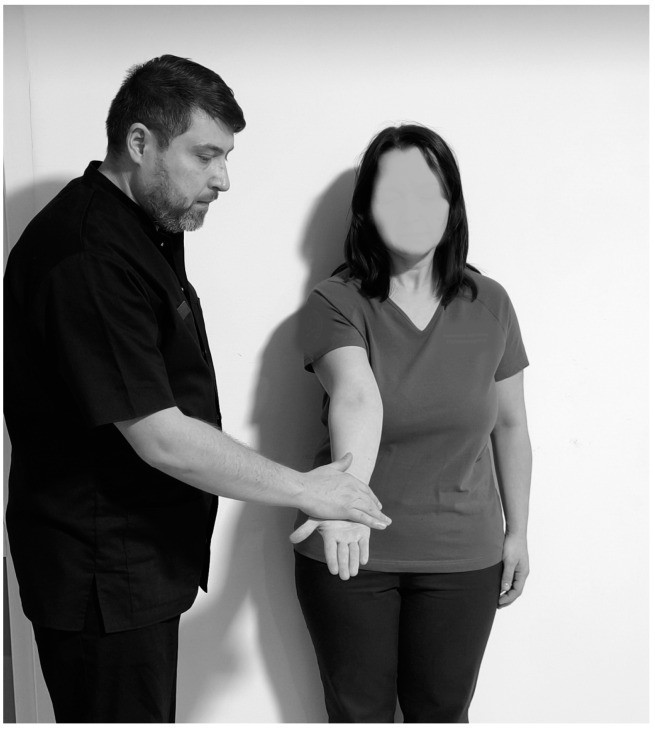
Steps
Arm straight forward, palm up, elbow straight
Push down while the patient resists
Positive
Pain in the bicipital groove (front of the shoulder)
Tap to reveal
Yergason's test
Biceps tendinopathy
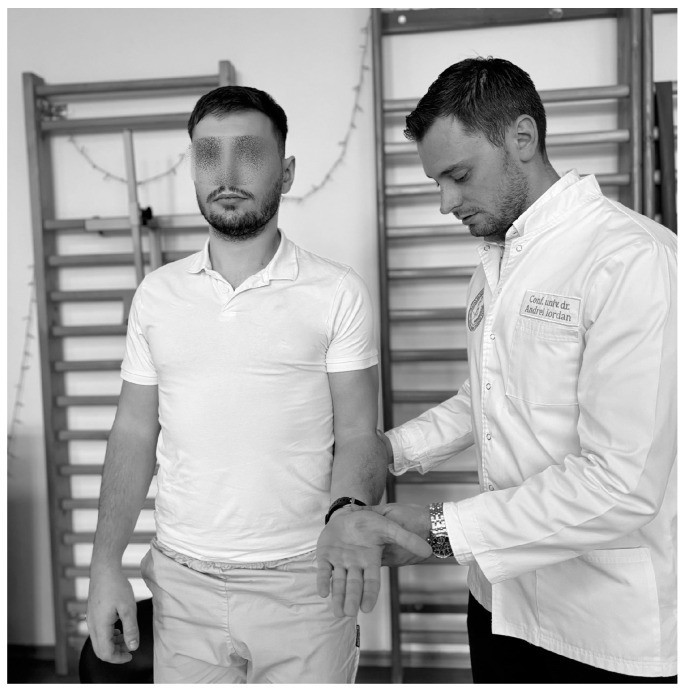
Steps
Elbow bent 90° at the side, palm down
"Shake hands"; patient turns the palm up against your resistance
Positive
Pain in the bicipital groove
Tap to reveal
Anterior instability
Apprehension test
Anterior instability
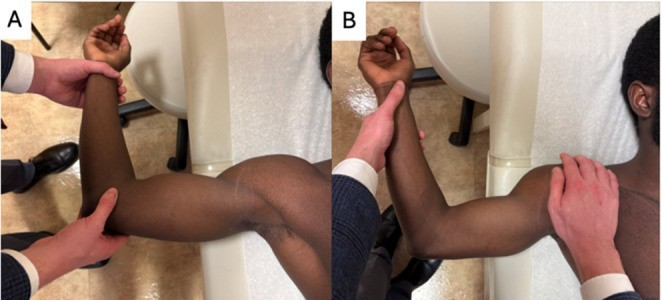
Steps
Patient lies on their back
Arm out to 90°, elbow bent
Slowly rotate the hand back (external rotation)
Positive
Apprehension: fear the shoulder will dislocate (pain alone is weaker)
Tap to reveal
Relocation test (Fowler's sign)
Confirms anterior instability
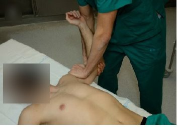
Steps
At the point of apprehension
Press the front of the shoulder backward
Positive
Apprehension goes away
Tap to reveal
AC joint
Scarf test (cross-arm)
AC joint
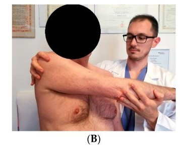
Steps
Bring the arm across the chest toward the opposite shoulder
Push it a little further
Positive
Pain on top of the shoulder (AC joint)
Tap to reveal
Pearls and X-rays
Remember
Inflammatory arthritis → global loss of ROM (especially abduction) with pain at the end of every movement; can be mistaken for a frozen shoulder.
⚠ Think of non-MSK causes of shoulder pain: cardiac, splenic.
X-rays: AP (alignment, arthritis, space under the acromion, AC joint) and scapular Y (dislocation: humeral head sits in front).
Tap to reveal
Elbow
Week 2 · 4 special tests
General exam
Look · Feel · Move
Say first: "I would normally inspect the other side and examine the joint above and below (the shoulder and wrist), but in the interest of time I will focus on the elbow complaint."
Look
swelling: loss of the grooves beside the olecranon, swelling over the radial head, olecranon bursa fullness
redness over the joint or over the olecranon bursa
wasting of the forearm flexor or extensor muscles
deformity: varus or valgus, carrying angle, flexion contracture, hyperextension
scars: midline
Feel
temperature: warmer than the other elbow? (a key sign of inflammation)
effusion: swelling over the radial head and over the olecranon bursa
Find the groove between the medial epicondyle and the olecranon
Tap over the nerve
Positive
Tingling into the ring and little finger
Tap to reveal
Pearls and X-rays
Remember
Tennis elbow is common: resisting any muscle from the lateral epicondyle (wrist or finger extension, supination) can bring the pain on.
X-ray: on the lateral view, look for an effusion; elbow arthritis = joint space loss, osteophytes, subchondral sclerosis and cysts.
Tap to reveal
Wrist and hand
Week 2 · 5 special tests
General exam
Look · Feel · Move
Say first: "I would normally inspect the other side and examine the joint above and below (the elbow and neck), but in the interest of time I will focus on the wrist and hand complaint."
Look
swelling: distal (DIP), proximal (PIP) and metacarpophalangeal (MCP) joints, thumb base (1st carpometacarpal, CMC), wrist, extensor tendons, extensor carpi ulnaris, the thumb tendons at the wrist (EPB and APL: extensor pollicis brevis, abductor pollicis longus), flexor tendons in the palm
redness over the DIPs, PIPs, MCPs, wrist and tendons
wasting: intrinsic hand muscles, thenar and hypothenar eminences
deformity: Heberden's (DIP) and Bouchard's (PIP) nodes, ulnar drift at the MCPs, swan neck, boutonnière, radial deviation of the wrist, Z-thumb, squaring of the CMC, rheumatoid nodules
scars: carpal tunnel release
Feel
temperature over the joints vs the tissue around them
Tingling in the thumb, index, middle (and half the ring) finger
Tap to reveal
Phalen's test
Carpal tunnel syndrome
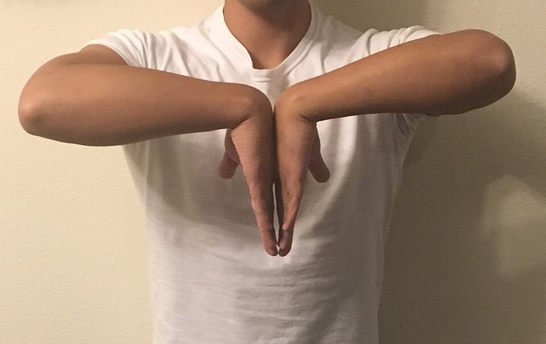
Steps
Backs of the hands pressed together, wrists fully bent
Hold for 60 seconds
Positive
Same median-nerve tingling
Tap to reveal
Thumb base arthritis
1st CMC grind test
Thumb base osteoarthritis
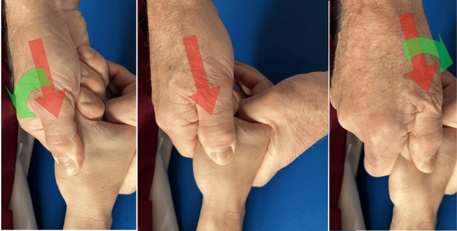
Steps
Hold the thumb's metacarpal
Push it into the joint and rotate
Positive
Pain or grinding at the thumb base
Tap to reveal
De Quervain's tenosynovitis
Finkelstein's test
De Quervain's tenosynovitis
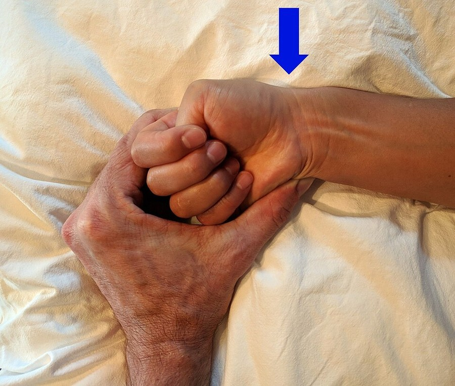
Steps
Thumb tucked inside a fist
Bend the wrist toward the little finger
Positive
Sharp pain over the radial styloid (thumb side of the wrist)
Tap to reveal
Ulnar nerve
Tinel's sign (elbow)
Ulnar nerve (cubital tunnel)
Steps
Find the groove between the medial epicondyle and the olecranon
Tap over the nerve
Positive
Tingling into the ring and little finger
Tap to reveal
Pearls and X-rays
Remember
The 1st CMC is the hand's most common osteoarthritis site (weak grip, pain at the thumb base); OA also hits DIPs and PIPs.
Numb thumb and index finger is not always carpal tunnel: it may be a C6 radiculopathy.
X-rays: an ulnar deviation view for a suspected scaphoid fracture · Colles' = distal radius angled dorsally ("dinner fork") vs Smith's = angled volarly; look for an ulnar styloid fracture too.
Tap to reveal
Hip
Week 3 · 7 special tests
General exam
Look · Feel · Move
Say first: "I would normally inspect the other side and examine the joint above and below (the low back and knee), but in the interest of time I will focus on the hip complaint."
Look
swelling: groin only (hip joint swelling cannot be seen)
redness over the side of the hip (trochanteric bursa)
wasting: gluteals
deformity: flexion contracture, increased lumbar lordosis, pelvic tilt (obliquity), leg alignment hip to toe
scars: lateral (hip replacement or fracture repair)
Feel
bony: greater trochanter, pubic symphysis, iliac crest, anterior and posterior superior iliac spines (ASIS, PSIS), sacrum, SI joint, ischial tuberosity
soft tissue: inguinal ligament and nodes, femoral artery, gluteals, piriformis, iliotibial (IT) band
Move: flexion 135° · external rotation 45° · internal rotation 35° (lost first in hip arthritis, then flexion) · abduction 45° · adduction 20° · pain on movement? Compare sides.
Also: examine the knee and lumbar spine; gait: antalgia, alignment, Trendelenburg or waddling gait
Neurovascular: pulses, then motor, sensation and reflexes in the leg (root table under Neuro screen)
True hip joint pain is felt in the groin. Lateral thigh and buttock pain usually is not the hip joint.
Patient hugs one knee to the chest (flattens the low back)
Watch the other thigh
Positive
Other thigh lifts off the table
Tap to reveal
Weak hip abductors
Trendelenburg sign
Weak gluteus medius
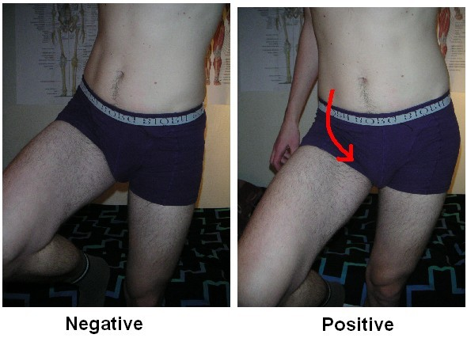
Steps
Stand behind; hands on the iliac crests
Patient stands on the tested leg, lifts the other foot
Positive
Pelvis drops on the lifted-leg side = the standing side is weak
Tap to reveal
Inside the hip joint
Stinchfield test
Inside the hip joint (e.g. arthritis)
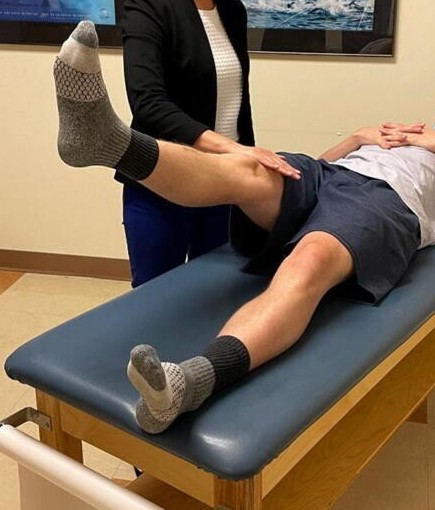
Steps
Patient lies on their back
Lifts the straight leg to about 30°
Push down on the thigh; patient resists
Positive
Groin pain
Tap to reveal
SI joint (or hip)
FABER test (Flexion, ABduction, External Rotation)
SI joint or hip
Steps
Patient lies on their back
Ankle on the opposite knee (figure-4)
Hold the opposite pelvis (ASIS) and press the bent knee down
Positive
Back-of-pelvis pain = SI joint · groin pain = hip
Tap to reveal
Thigh thrust
SI joint
Steps
Patient lies on their back; hip bent 90°
One hand under the sacrum
Push down along the thigh
Positive
Buttock (SI joint) pain
Tap to reveal
IT band
Ober's test
Tight IT band
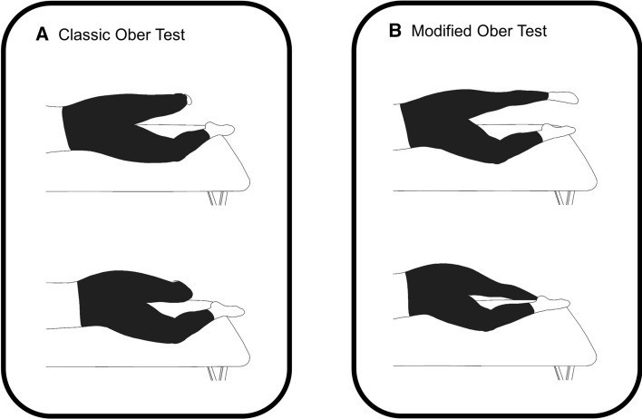
Steps
Patient lies on the good side, tested leg on top
Bend the top knee 90°; take the leg back and out
Let it drop toward the table
Positive
Leg stays up (does not drop)
Tap to reveal
Leg length
True and apparent leg length
Leg length difference
Steps
Patient lies straight
True: tape from the ASIS to the medial malleolus
Apparent: tape from the belly button to the medial malleolus
Positive
True difference = bone length · apparent only = pelvic tilt or contracture
Tap to reveal
Pearls and X-rays
Remember
Hip pain can come from lower limb alignment problems: fix the alignment and the hip often settles.
X-rays: AP (joint space) and lateral (fracture, dislocation) · hip fracture types: femoral neck, intertrochanteric, subtrochanteric.
Tap to reveal
Knee
Week 3 · 12 special tests
General exam
Look · Feel · Move
Say first: "I would normally inspect the other side and examine the joint above and below (the hip and ankle), but in the interest of time I will focus on the knee complaint."
Look
swelling: loss of the grooves beside the patella, fullness above the patella, Baker's cyst (behind the knee), prepatellar bursa
redness over and around the joint
wasting: quadriceps
deformity: varus or valgus, flexion contracture, hyperextension (genu recurvatum)
Say first: "I would normally inspect the other side and examine the joint above and below (the knee and low back), but in the interest of time I will focus on the ankle and foot complaint."
Look
swelling: across the metatarsophalangeal (MTP) joints, dactylitis (sausage toe), the ankle joint, around the tendons (tibialis posterior, peroneals, Achilles)
redness over the ankle, midfoot, MTPs and Achilles
bruising over the lateral ankle
wasting: intrinsic foot muscles
deformity: hallux valgus, claw and hammer toes, "too many toes" sign (forefoot abduction), hindfoot valgus or varus, flat foot (pes planus) or high arch (pes cavus)
scars: lateral ankle, over the metatarsals
Feel
bony: MTPs (bunion, bunionette), navicular, base of the 5th metatarsal, distal tibia, medial malleolus, distal fibula, lateral malleolus, fibular head
soft tissue: deltoid (medial) ligament, lateral ligaments (ATFL, CFL, PTFL: anterior talofibular, calcaneofibular, posterior talofibular), plantar fascia at both ends, Achilles, tibialis posterior and peroneal tendons
Move: plantar flexion 0-50° · dorsiflexion 0-20° · inversion 0-35° · eversion · big toe flexion 0-45° and extension 0-70°
Also: gait: antalgia, alignment, weakness · can the patient bear weight?
Neurovascular: pulses, then motor, sensation and reflexes in the leg (root table under Neuro screen)
Point the foot down and tip the heel inward: tests the ATFL
Foot at 90°, tip inward: CFL
Foot pulled up, tip inward: PTFL
Positive
Pain or more give than the other side
Tap to reveal
Passive external rotation
High ankle sprain (syndesmosis)
Steps
Knee bent 90°, ankle at 90°
Turn the foot outward
Positive
Pain above the ankle, between tibia and fibula
Tap to reveal
Achilles rupture
Thompson test
Achilles tendon rupture
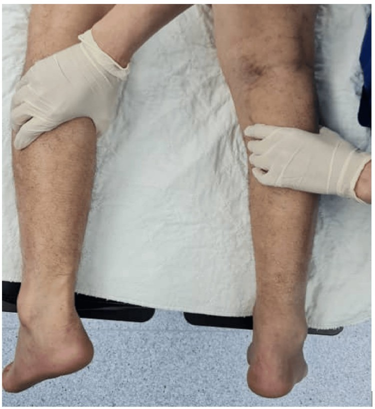
Steps
Patient lies face down, feet off the bed
Squeeze the calf
Positive
Foot does not point down
Tap to reveal
Deep vein thrombosis
Homan's sign
Deep vein thrombosis (DVT)
Steps
Knee slightly bent
Pull the foot up (dorsiflex)
Positive
Calf pain (a weak test: never rules a DVT in or out)
Tap to reveal
Morton's neuroma
Metatarsal squeeze
Morton's neuroma
Steps
Squeeze the metatarsal heads together from the sides
Positive
Pain or a click in the web space
Tap to reveal
Fracture: X-ray or not?
Ottawa ankle and foot rules
Who needs an X-ray (age 18 or over)
Steps
Press the back edge and tip of each malleolus (distal 6 cm of tibia and fibula)
Press the base of the 5th metatarsal and the navicular
Ask them to walk 4 steps
Positive
Any bony tenderness there, or cannot bear weight for 4 steps (right after the injury and in the emergency department) → X-ray
Tap to reveal
Pearls and X-rays
Remember
Ottawa ankle and foot rules (age ≥ 18): X-ray if there is bony tenderness at the distal 6 cm of the tibia or fibula (back edge or tip of either malleolus), the base of the 5th metatarsal or the navicular, or the patient cannot bear weight for 4 steps both right after the injury and in the emergency department.
Most "bunions" are osteoarthritis of the 1st MTP.
Cannot rise onto the toes on one side → think tibialis posterior tendon rupture.
Flat foot: rigid or supple? Rise onto the toes: the arch returns = supple. Flat feet cause problems further up (knee, hip, back).
X-rays: AP, lateral and mortise view (the ankle joint without the fibula overlapping).
Tap to reveal
Videos
Videos by MSK Medicine, played from their YouTube channel; where they have none, a video from another teaching channel, named on its button. Each opens only when you tap it.
Image credits
Images reused under their open licences (Creative Commons or public domain). Some were cropped to hide faces.
Spurling's maneuver: George Pujalte, Jayson R Loeffert, Tais G O Bertasi et al. - Cervical Spine Evaluation by Telephone and Video Visit (Cureus, 2021), Figure 6B, CC BY (version not stated in licence text), source
Straight leg raise (Lasegue): Amit Hegde, Atul Sareen, Ravi Shankar et al. - The Association Between Hamstring Tightness and Chronic Low Back Pain: A Comparative Study (Cureus, 2026), Figure 2, CC BY 4.0, source
Femoral nerve stretch test: Kristine Vegstein, Hilde Stendal Robinson, Roar Jensen - Neurodynamic tests for patellofemoral pain syndrome: a pilot study (Chiropractic & Manual Therapies, 2019), Fig. 2, CC BY 4.0, source
Modified Schober test: Nasch92, CC BY-SA 4.0, source
Painful arc (shoulder): Daniel-Andrei Iordan, Stoica Leonard, Daniela Viorelia Matei et al. - Understanding Scapulohumeral Periarthritis: A Comprehensive Systematic Review (Life, 2025), Figure 4, CC BY 4.0, source
Hawkins-Kennedy test: Daniel-Andrei Iordan, Stoica Leonard, Daniela Viorelia Matei et al. - Understanding Scapulohumeral Periarthritis: A Comprehensive Systematic Review (Life, 2025), Figure 3, CC BY 4.0, source
Empty can (Jobe) test: Daniel-Andrei Iordan, Stoica Leonard, Daniela Viorelia Matei et al. - Understanding Scapulohumeral Periarthritis: A Comprehensive Systematic Review (Life, 2025), Figure 6, CC BY 4.0, source
Lift-off (Gerber) test: Daniel-Andrei Iordan, Stoica Leonard, Daniela Viorelia Matei et al. - Understanding Scapulohumeral Periarthritis: A Comprehensive Systematic Review (Life, 2025), Figure 8, CC BY 4.0, source
Belly press test: Patrick M. O'Brien, Jack E. Kazanjian, James D. Kelly et al. - Subscapularis Function After Total Shoulder Arthroplasty Using Lesser Tuberosity Osteotomy or Tenotomy (JAAOS Global Research & Reviews, 2020), Figure 3, CC BY 4.0, source
Speed's test: Daniel-Andrei Iordan, Stoica Leonard, Daniela Viorelia Matei et al. - Understanding Scapulohumeral Periarthritis: A Comprehensive Systematic Review (Life, 2025), Figure 12, CC BY 4.0, source
Yergason's test: Daniel-Andrei Iordan, Stoica Leonard, Daniela Viorelia Matei et al. - Understanding Scapulohumeral Periarthritis: A Comprehensive Systematic Review (Life, 2025), Figure 11, CC BY 4.0, source
Shoulder apprehension and relocation test: Emily N Lau, Cortez L Brown, Rachit Saggar et al. - Managing Shoulder Instability in the Contact and Collision Athlete (Current Reviews in Musculoskeletal Medicine, 2026), Fig. 1a-b, CC BY 4.0, source
Scarf (cross-body adduction) test: Federico Bozzi, Sergi Alabau-Rodriguez, Sergi Barrera-Ochoa et al. - Suprascapular Neuropathy around the Shoulder: A Current Concept Review (Journal of Clinical Medicine, 2020), Figure 3B, CC BY 4.0, source
Elbow valgus stress test: Hironobu Koseki, Shiro Kajiyama, Takayuki Shida et al. - Characteristics and Clinical Assessment of Elbow Pain in Youth Baseball Players (Sports, 2024), Figure 2, CC BY 4.0, source
CMC grind test: Saverio Colonna, Corrado Borghi - Rhizarthrosis Part I: A Literature Review (Cureus, 2024), Figure 10, CC BY (version not stated in licence text), source
Finkelstein's test: James Heilman, MD, CC BY-SA 4.0, source
Thomas test: Hugh Owen Thomas, CC BY-SA 4.0, source
Trendelenburg sign: User:Mikael Häggström, Public domain, source
Stinchfield test: Stephanie E. Wong, Charles J. Cogan, Alan L. Zhang - Physical Examination of the Hip: Assessment of Femoroacetabular Impingement, Labral Pathology, and Microinstability (Current Reviews in Musculoskeletal Medicine, 2022), Figure 7, CC BY 4.0, source
FABER (Patrick) test: Stephanie E. Wong, Charles J. Cogan, Alan L. Zhang - Physical Examination of the Hip: Assessment of Femoroacetabular Impingement, Labral Pathology, and Microinstability (Current Reviews in Musculoskeletal Medicine, 2022), Figure 6, CC BY 4.0, source
Ober's test: L. A. Hutchinson, G. A. Lichtwark, R. W. Willy et al. - The Iliotibial Band: A Complex Structure with Versatile Functions (Sports Medicine (Auckland, N.z.), 2022), Fig. 10, CC BY 4.0, source
True leg length measurement: Davide Stimolo, Salvatore Lo Giudice, Fabrizio Matassi et al. - Multicenter survey about leg length discrepancy and total hip arthroplasty: preoperative and intraoperative management (Musculoskeletal Surgery, 2024), Fig. 1, CC BY 4.0, source
Lachman test: Mak-Ham Lam, Daniel TP Fong, Patrick SH Yung, Eric PY Ho, Wood-Yee Chan and Kai-Ming Chan, CC BY-SA 2.0, source
Posterior sag sign: Rock P Vomer, Emma York, Larick S Rayghan et al. - Telemedicine Examination of the Knee (Cureus, 2023), Figure 8, CC BY (version not stated in licence text), source
Thessaly test: Rock P Vomer, Emma York, Larick S Rayghan et al. - Telemedicine Examination of the Knee (Cureus, 2023), Figure 10, CC BY (version not stated in licence text), source
Patellar apprehension test: Paul Nardelli, Armin Runer - Klinische Untersuchung und Bildgebung bei patellofemoraler Arthrose (Orthopadie (Heidelberg, Germany), 2025), Abb. 6, CC BY 4.0, source
Patellar grind (Clarke) test: Paul Nardelli, Armin Runer - Klinische Untersuchung und Bildgebung bei patellofemoraler Arthrose (Orthopadie (Heidelberg, Germany), 2025), Abb. 5, CC BY 4.0, source
Ankle anterior drawer: Yasutaka Murahashi, Atsushi Teramoto, Katsunori Takahashi et al. - High reproducibility of a novel supported anterior drawer test for diagnosing ankle instability (BMC Musculoskeletal Disorders, 2023), Fig. 2a, CC BY 4.0, source
Thompson (Simmonds) test: Sharina Mohd Khalid, Mohd Fadhli Miskon - Assessing Functional Outcomes and Complications After Turndown Flap With Flexor Hallucis Longus Augmentation in Chronic Achilles Tendon Ruptures (Cureus, 2026), Figure 1, CC BY 4.0, source
Cervical spine landmarks diagram: OpenStax College, CC BY 3.0 (https://creativecommons.org/licenses/by/3.0), source
Lumbar spine landmarks diagram: OpenStax College, CC BY 3.0 (https://creativecommons.org/licenses/by/3.0), source
Shoulder landmarks diagram: National Institute Of Arthritis And Musculoskeletal And Skin Diseases (NIAMS); SVG version by Angelito7, Public domain, source
Elbow landmarks diagram: OpenStax College, CC BY 3.0 (https://creativecommons.org/licenses/by/3.0), source
Wrist and hand landmarks diagram: OpenStax College, CC BY 3.0 (https://creativecommons.org/licenses/by/3.0), source
Hip landmarks diagram: OpenStax College, CC BY 3.0 (https://creativecommons.org/licenses/by/3.0), source
Knee landmarks diagram: Mysid, Public domain, source
Ankle and foot landmarks diagram: Laboratoires Servier, CC BY-SA 3.0 (https://creativecommons.org/licenses/by-sa/3.0), source
Adam's forward bend test: Tu Q, Xu W, Feng Y et al. - Prevalence and determinants of adolescent idiopathic scoliosis from school screening in Xiaoshan District, Hangzhou, China (Front Public Health, 2025), Figure 3 (right panel), CC BY (version not stated) (cropped; patient's head blurred), source
Thigh thrust: Abdollahi S, Sheikhhoseini R, Rahimi M et al. - The sacroiliac dysfunction and pain is associated with history of lower extremity sport related injuries (BMC Sports Sci Med Rehabil, 2023), Fig. 1B 'posterior shear', CC BY 4.0 (cropped to panel B; faces blurred), source
Bear hug test: Koç E, Seker C, Sensoy AA et al. - Delayed refixation of a lesser tuberosity avulsion fracture (BMC Musculoskelet Disord, 2026), Fig. 6A, CC BY 4.0 (cropped to panel A; face blurred), source
Drop arm test: Adamus JP, Dywan K, Paszt Z et al. - From Clinical Signs to Functional Recovery: A Practice-Oriented Review of Rotator Cuff Tear Management in Primary Care (J Clin Med, 2026), Figure 4E, CC BY 4.0 (cropped to panel E; face and a wall poster blurred), source
Patellar ballottement: Nardelli P, Runer A - Klinische Untersuchung und Bildgebung bei patellofemoraler Arthrose (Orthopadie, 2025), Abb. 1, CC BY 4.0, source
Resisted external rotation: Adamus JP, Dywan K, Paszt Z et al. - From Clinical Signs to Functional Recovery: A Practice-Oriented Review of Rotator Cuff Tear Management in Primary Care (J Clin Med, 2026), Figure 4B (left photo), CC BY 4.0 (cropped below the face), source
Relocation test (Fowler's sign): Valencia Mora M, Ibán MÁR, Heredia JD et al. - Physical Exam and Evaluation of the Unstable Shoulder (Open Orthop J, 2017), Fig. 4C, CC BY 4.0 (cropped to panel C; panel letter removed; face blurred), source
Bragard's sign: Pesonen J, Shacklock M, Rantanen P et al. - Extending the straight leg raise test for improved clinical evaluation of sciatica (BMC Musculoskelet Disord, 2021), Fig. 1, CC BY 4.0 (top trimmed), source
Tinel's sign (wrist): Vomer RP, Lewno AJ, Udoh I et al. - Evaluation of the Hand and Wrist via Telephone and Video Visit (Cureus, 2023), Figure 8, CC BY (version not stated), source
Valgus / varus stress: Lopes C, Vilaca A, Rocha C et al. - Knee positioning systems for X-ray environment: a literature review (Phys Eng Sci Med, 2023), Fig. 3, CC BY 4.0 (cropped below the examiner's face), source
Anterior drawer: Afana HB, Nau T - Physeal-Sparing ACL Reconstruction for Skeletally Immature Patients (Case Rep Orthop, 2021), Figure 2, CC BY (version not stated), source